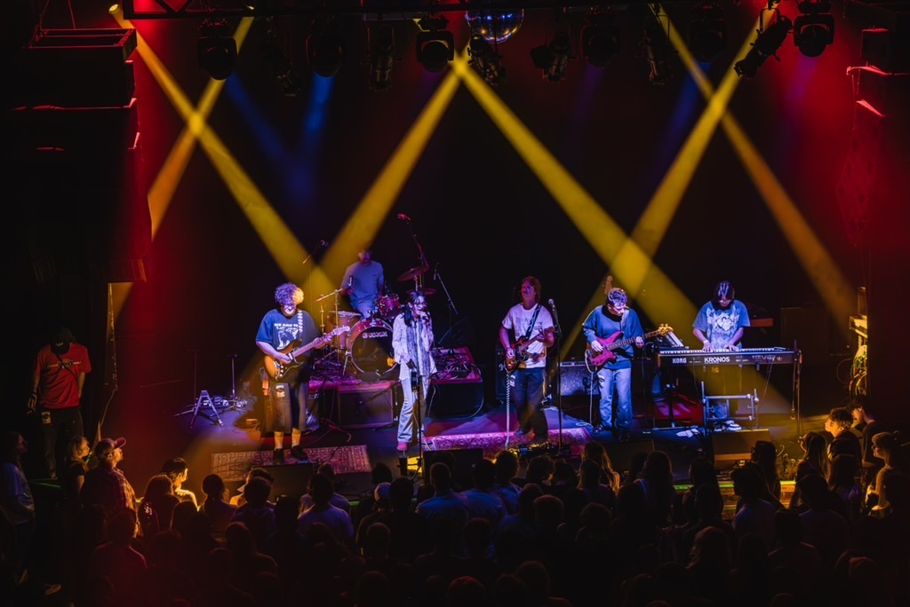
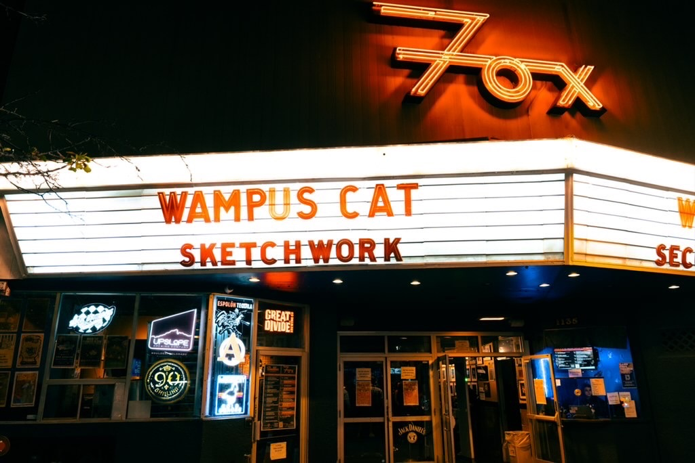

Hey! My name is Connor Sexton. I am from Boulder Colorado. I attended Fariview High School, and now am a student at the University of Colorado Boulder. I am studying Creative Techology and Design in the ATLAS Institute. I am passionate about all things music. I have been playing guitar since a very young age, getting trained classically then moving to more electic guitar focused studies. I enjoy the processes of audio engineering and sound production, and perfoming live with my band, Sketchwork. I had the opprotunity to play The Fox Theater on the Hill twice this past semester, which was a huge check off my bucket list, especially as someone who grew up in the area. I also enjoy Mountain Biking, Backpacking, Skiing, and Climbing, as you would expect. And yes, I am a Eagle Scout. Classic Boulder sterotype!
 